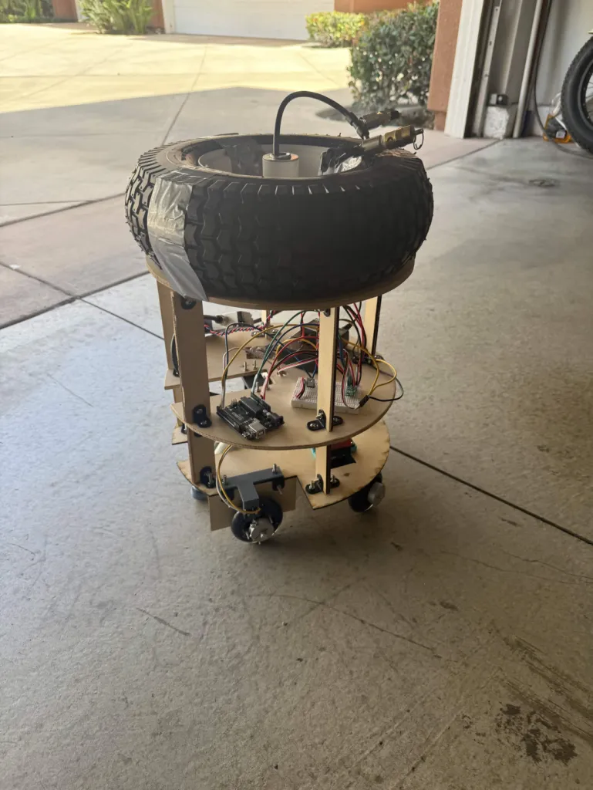
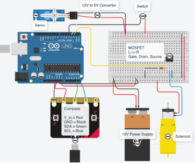
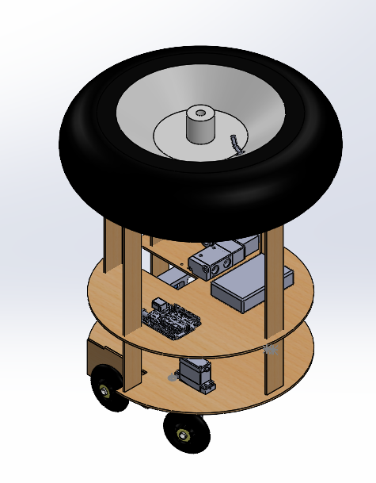

Mechanical objective
Improve rigidity and reduce tipping.
Project 02 / Mechanical design / mechatronics
Mechanical structure for a controlled hopping robot.

Worked on a three-person team to build a hopper robot using closed-loop PD control. My contribution centered on the mechanical structure, fabrication, fitment, and integration.
Design a structure to improve rigidity and reduce tipping, then integrate the mechanical assembly with the robot system.
As Mechanical Lead, I was responsible for mechanical CAD, fabrication, and mechanical integration. The team’s robot used closed-loop PD control.
CAD, analysis, fabrication, and testing documentation.




Used rapid prototyping and iterative manufacturing to develop the structure and integrate the mechanical components.
[ADD ENGINEERING APPROACH: describe the prototype sequence and the evidence used to select revisions.]
Improve rigidity and reduce tipping.
Develop CAD, laser-cut components, woodworking, and printed mounts.
Manage fitment, tolerances, and assembly within the PD-controlled robot.
Designed the mechanical structure and mounts in CAD, with attention to fitment and assembly.
[ADD CAD DETAILS: CAD software used on this project, mounting interfaces, and critical dimensions.]
The design emphasized rigidity and resistance to tipping.
[ADD ANALYSIS: any actual center-of-gravity assessment, structural calculations, or stability checks. Do not imply a calculation was performed unless documented.]
Worked with laser-cut components, woodworking, and 3D-printed mounts. Managed tolerances, fitment, assembly, and integration through rapid prototyping and iterative manufacturing.
[ADD TESTING AND ITERATION: document a prototype test, the observed mechanical issue, the design revision, and the repeat-test outcome. Include PD-controller context only where it explains mechanical behavior.]
Rigidity, tipping, tolerances, and component fitment were mechanical design considerations.
[ADD CHALLENGE: show a specific fit or stability problem and how the revised structure addressed it.]
Completed mechanical CAD, fabrication, and integration responsibilities for the team.
[ADD PROJECT RESULTS: actual demonstrated behavior, test evidence, and remaining limitations. Quantified performance has not been supplied.]
[ADD WHAT I LEARNED: explain a lesson about rigidity, tolerances, prototyping, or integrating a mechanical assembly into a controlled system.]